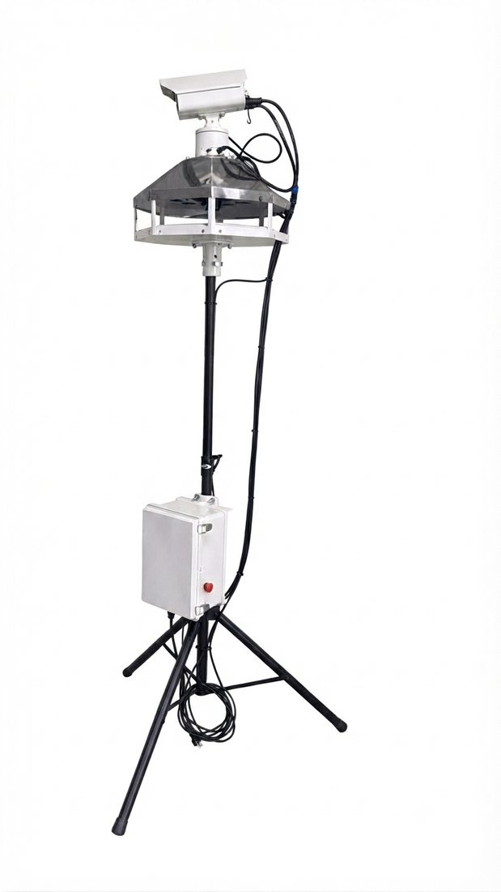
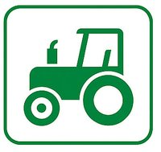
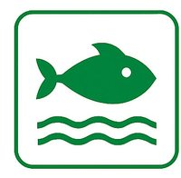
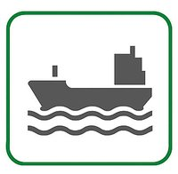

회전하는 녹색 레이저와 천적 울음소리 퇴치음을 동시에 작동시켜, 조류가 한 가지 자극에 익숙해지는 것을 막습니다. 팔면체 반사판은 상공에서 접근하는 새들의 눈부심으로 접근 시 방해를 주고, 퇴치음을 360° 전방위로 퍼뜨려 한 대로 넓은 면적을 지킵니다.

자동 회전 녹색 레이저 위에 태양광 야생동물퇴치기를 결합했습니다. 레이저가 넓은 범위를 비추는 동안, 태양광 퇴치기가 접근하는 동물을 감지해 경고음과 LED 점멸로 쫓아냅니다.


농장·축사
양식장
항만과수원 설치 현장 - 레이저와 퇴치음 동시 작동